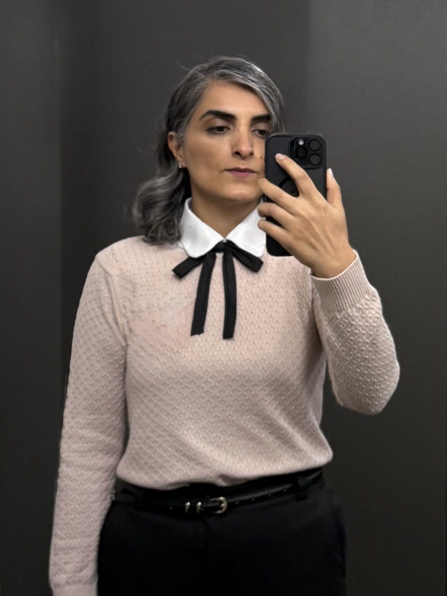

Privacy-Preserving Glycemic Management in Type 1 Diabetes: Development and Validation of a Multiobjective Federated Reinforcement Learning Framework
Fatemeh Sarani Rad, J. Li
JMIR Diabetes · 10:e72874
I work on how learning systems can make better decisions over time using reinforcement learning, privacy-preserving learning, and structured patient-specific representations.
reinforcement learning · federated learning · digital twins · healthcare AI

About
I am a PhD student in Computer Science at North Dakota State University and a researcher in the Intelligence Lab. My research focuses on machine learning for personalized healthcare decision support, particularly sequential decision-making under real-world constraints.
Much of my work asks how a learning system should adapt its decisions over time when objectives compete, observations are imperfect, and sensitive data cannot always be centralized. I have worked on reward shaping for glycemic management, multi-objective and federated reinforcement learning, and patient-centric digital twins that use knowledge graphs to represent individualized clinical context.
I am also exploring multi-agent reinforcement learning and broader questions around coordination between interacting learning components. Across these projects, I care about reproducible experimentation, careful evaluation, and building models that remain meaningful in the setting where they are used.
My work on patient-centric digital twins and knowledge graphs for personalized diabetes management received the Journal of Personalized Medicine Best Paper Award.
Publications
Fatemeh Sarani Rad, J. Li
JMIR Diabetes · 10:e72874
Fatemeh Sarani Rad, R. Hendawi, X. Yang, J. Li
🏆 Best Paper Award — Journal of Personalized Medicine · 14(4):359
M. Amiri, Fatemeh Sarani Rad, J. Li
Nutrients · 16:346
Fatemeh Sarani Rad, M. Amiri, J. Li
Nutrients · 16:3117
Fatemeh Sarani Rad, J. Li
IEEE HealthCom
Experience
Machine learning and reinforcement learning for personalized healthcare decision support, including federated reinforcement learning, patient-centric digital twins, knowledge graphs, and reproducible evaluation pipelines.
Built dashboards and recurring reports, used Python and SQL for data extraction, cleaning, and analysis, and documented validation checks and analytical workflows for operational decision-making.
Developed healthcare data pipelines, visualization workflows, software tools, and analytics systems in a clinical environment.
Contributed to national-scale EHR, health data exchange, interoperability, technical standards, data mapping, analysis, and visualization projects.
Education
Honors
Contact
The fastest way to reach me is email: fatemeh.saranirad@ndsu.edu.
Most research repositories are private due to lab and data confidentiality.